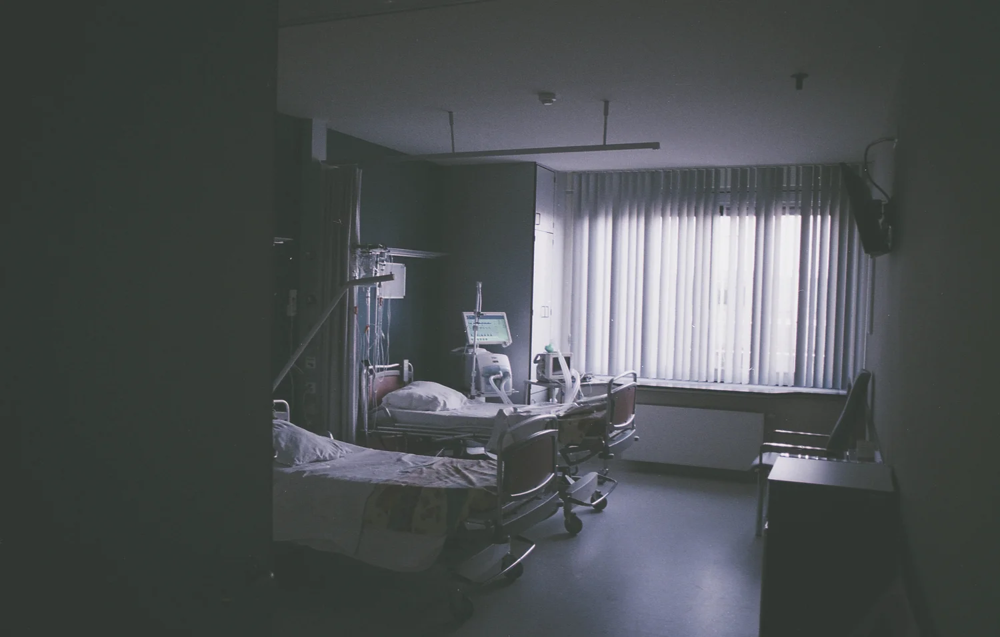
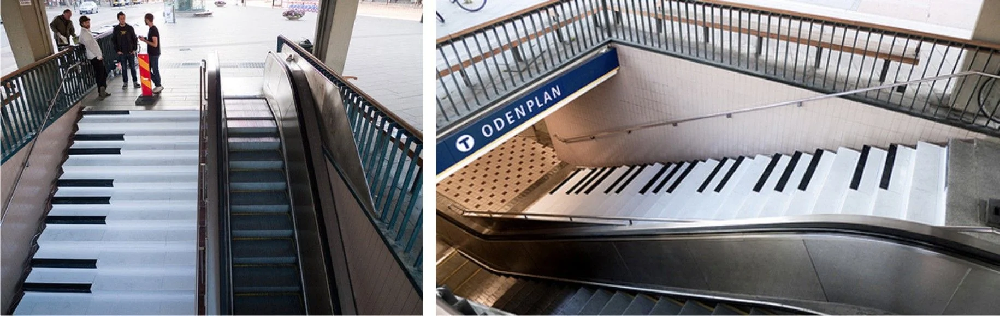

Nudging: from automatic to reflective
An MA dissertation on behavioural design — asking whether nudge principles could close the gap between what NHS staff intend to do with clinical waste and what actually happens at the bin.

The problem
Healthcare produces an enormous volume of waste, and how it is segregated at the point of disposal determines what happens to it afterwards. Clinical waste must be incinerated at high cost and high carbon; general and recyclable waste need not be. A single item dropped into the wrong bin moves the whole bag into the more expensive, more damaging stream.
The interesting part is that this is rarely a knowledge problem. Staff generally know the rules. The gap is between intention and action — a decision made in a couple of seconds, by someone mid-task, with their attention on a patient rather than on a bin.
My master's thesis at Goldsmiths asked whether behavioural design could close that gap at Barts Health NHS Trust, England's largest NHS organisation.
The theory
The research uses Dual Process Theory to examine the distance between intended and actual behaviour. It distinguishes two systems of thinking: the automatic — fast, unconscious, driven by habit and environment — and the reflective — slow, analytical, deliberate.
Waste segregation in a hospital is almost entirely an automatic-system act. Training, signage and policy all address the reflective system, which is largely not the system making the decision. That mismatch explains why awareness campaigns so often fail to change what ends up in the bin.
The EAST framework
To design interventions rather than just diagnose the problem, the work applies the EAST framework — make the desired behaviour Easy, Attractive, Social and Timely. It shifts the question from "how do we tell people to do this?" to "how do we arrange the environment so the right thing is the path of least resistance?"

Method
The fieldwork combined qualitative and quantitative approaches, on the principle that a nudge designed from a desk is only a guess.
- Interviews with sustainability experts — to understand where policy meets practice, and where previous interventions had failed.
- Fieldwork observation at Whipps Cross Hospital — watching how disposal decisions are actually made, rather than how they are described.
- Staff surveys and waste-management data analysis — testing stated intention against measured outcome.
- PESTEL assessment and stakeholder evaluation — mapping the political, economic and organisational constraints any intervention would have to survive.
The ethical line
Nudging attracts a reasonable objection: if you are shaping someone's behaviour without their conscious agreement, who decides what the right behaviour is? The work takes that seriously rather than waving it away, and holds to a test for whether an intervention is legitimate.
A nudge, used correctly, should be voluntary, avoidable, easy or passive, and low cost — advancing organisational goals while respecting individual autonomy. If an intervention fails any of those, it has stopped being a nudge and become something else: a mandate, a penalty, or a manipulation.
Why it still matters to my practice
This was academic work, not a shipped product — but it shaped how I approach design problems a decade later. It is the reason I start with observed behaviour rather than stated preference, why I treat friction as a design material rather than a defect to be sanded away everywhere, and why I am sceptical of solutions that depend on people reading something carefully.
Most of the products I have worked on since — housing advice for people in crisis, business support, healthcare services — ask something of users at exactly the moment they have least capacity to give it. The dissertation was where I first had to take that seriously.